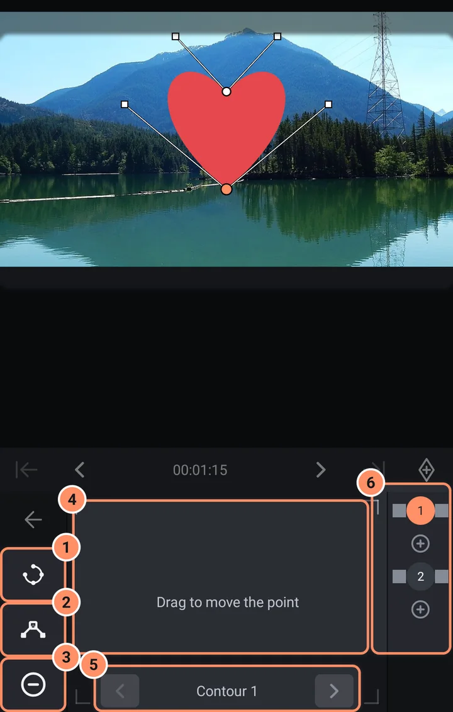
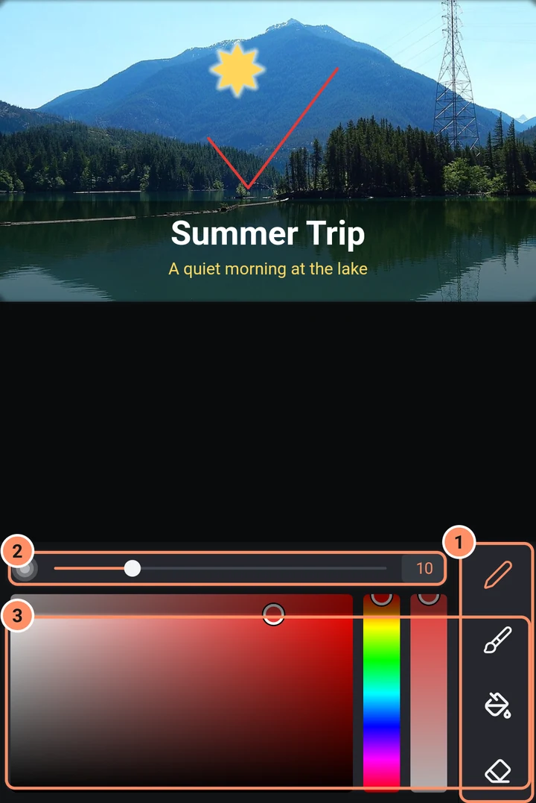
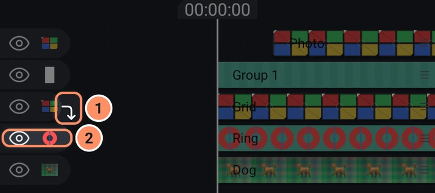
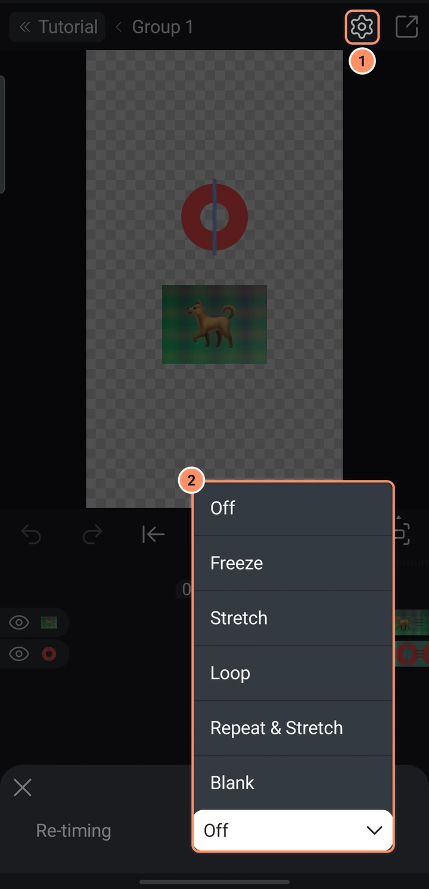

形状、绘制和蒙版
形状、钢笔工具、自由绘制、SVG 导入、剪贴蒙版、编组、父级以及带动画的形状蒙版。
形状
在 添加菜单 的 形状 选项卡中可以添加现成的形状。选中形状后点按 形状选项 即可修改。每个选项都可以用关键帧做动画。
- 圆角 排在最前，会把形状的每个角都变圆。圆角矩形、标注和邮票在这里使用各自的圆角半径。
- 大小 设置宽度和高度。
- 接下来是各个形状自己的选项，例如 齿轮 的齿、爱心 的凹口和尖端、手机 的边框、摄像头和侧键，或 面板 的边框、标题栏和网格。齿、光芒或尖角这类数量按整数变化。
- 高级 会打开较少用的选项，例如 圆环 的扫掠角，或 面板 的列和行。
工具网格中的 编辑点 会把形状按当前外观变成可移动的点。圆角仍然有效，撤销可以恢复选项。如果有选项带动画，应用会先询问。图层菜单中的 转换为轮廓 效果相同。用钢笔工具画的或从 SVG 导入的形状仍以 编辑点 为主要工具，它们的 形状选项 提供圆角。
旧版本的 AbsentMotion 会按图层开始时的样子显示这些形状，不带这些选项。
颜色和轮廓通过 填充和颜色 与 边框和阴影 设置。参见 图层工具。
钢笔工具和编辑点
添加菜单中的 钢笔工具 会创建一个新的形状图层，并打开点编辑器。工具网格中的 编辑点 会为现有路径形状打开它。在预览中，点按可放置一个点；按住并拖动可拉出曲线控制柄。一个虚影点会显示下一个点将落在的位置。如果未绘制任何内容就离开，新图层会被删除。
编辑器底部有：
- 闭合路径或打开路径（需要两个或更多点）。
- 将点设为曲线点或将点设为尖角点。
- 添加点和删除点。
- 一个用于移动所选点的触控板（“拖动以移动点”）；当你编辑平滑点的控制柄时，角度和距离开关可锁定其角度或长度。
- 带箭头的轮廓可在形状的各个独立子路径之间切换。
- 右侧是点的列表，点与点之间有小的“+”单元格，用于插入点。

顶部有 撤销、重做 和 返回。
带动画的形状（形状关键帧）
在点编辑器中，时间条上有 上一个形状关键帧、下一个形状关键帧、添加形状关键帧 和 移除形状关键帧。形状关键帧会记录播放头所在时间的整个形状。移动到另一个时间，修改点，再添加一个关键帧，形状就会在它们之间产生动画。上一个关键帧会以淡色虚线轮廓显示，帮助你对齐。这就是制作逐帧描摹动画蒙版的方法：沿视频中的物体描出轮廓，并随着物体移动而调整轮廓。
自由绘制
添加菜单中的 自由画笔 会创建一个绘制图层，并打开绘制编辑器。
- 钢笔绘制均匀的线条，画笔根据压力改变线宽，填充将你绘制的闭合环变为填充形状，橡皮擦擦除部分内容。
- 一个大小滑块（1 到 300），以及带有色相条和不透明度条的颜色选择器。
- 顶部有 撤销 和 重做。每一笔在抬起手指时都会保留下来。
- 工具、大小和颜色会被记住。如果未绘制任何内容就离开，新图层会被删除。

绘图没有关键帧。要为绘图制作动画，请使用“绘制进度”等特效；参见 特效库。
SVG 文件
添加菜单中的 导入 SVG 会将矢量图转换为形状。保留的内容参见 添加菜单。
蒙版和剪贴
- 创建剪贴蒙版（图层菜单）会将一个图层裁剪为其正下方图层的形状。释放剪贴蒙版可撤销此操作。在时间轴上，被剪贴的图层在其行末尾会显示一个小的弯钩箭头，指向它所被剪贴到的图层。
- 编组并蒙版和编组并排除（多选）会将图层编组，并将顶层图层的混合模式设为“蒙版”或“排除”。你也可以在不透明度中为任何图层设置混合模式“蒙版”或“排除”。蒙版只保留该图层所在位置下方的内容；排除则将其裁去。
- 带动画的蒙版来自形状关键帧（见上文）。
- 照片和视频的 移除背景 在 AI 工具 中说明。

组和父级
- 编组（多选）会把图层放入一个组图层。之后可以将组作为一个整体移动、缩放、淡入淡出并添加特效。参见 图层菜单和多选。
- 父级（顶栏中的父级按钮）可让一个图层跟随另一个图层，而无需编组。移动特效 父级助手 和 缩放辅助 会改变子图层跟随父图层的方式：参见 使用特效。
- 空对象图层（添加 > 对象 / 素材）不可见。将它设为其他图层的父级，即可让它们一起移动，或让 运动跟踪 来移动它。
编辑组
选择一个组，然后点按其工具中的 编辑组 即可打开它。进入后，时间轴和预览只显示该组的图层，你可以像编辑其他图层一样编辑它们。组中也可以再打开组。
- 顶栏会显示你当前所在的位置：项目名称，然后是每个已打开组的名称。点按项目名称可返回整个项目，点按某个组的名称可返回该组。
- 选中一个图层时，图层名称旁会显示一个带有组名称的小标签。点按它即可离开该组。
- 未选中任何内容时，手机的返回按钮会离开你当前所在的组。
- 齿轮图标会打开你所在组的设置。其中只有一个设置，即 时间重映射：见下文。
链接到素材的组会改为打开 素材属性：要修改其中的图层，请先打开原始素材，或先使用 取消关联素材（参见 素材、模板和预设）。由 移除背景（视频） 制作的视频抠像无法打开。
组的时间重映射
时间重映射决定组片段比其中的图层更长或更短时播放什么内容。打开组（编辑组），点按齿轮，然后选择：
- 关闭（默认）：图层按各自的速度播放，并在结束处停止。
- 定格：中间部分的最后一帧保持在屏幕上。
- 拉伸：图层放慢或加快，以填满组片段。
- 循环：图层从头再次播放。
- 重复并拉伸：图层整数次重复播放，并略微拉伸以精确填满片段。
- 空白：图层结束后不显示任何内容。
在组内，复制和粘贴菜单中还有 设置片头结束位置 和 设置片尾开始位置。它们会在标尺上放置金色旗标：片头结束位置之前和片尾开始位置之后的部分保持其真实速度，中间部分则被拉伸、循环或定格。

取消编组
组的图层菜单中的 取消编组 会将其图层放回项目中，恢复它们原来的时间和屏幕位置。如果组本身有特效、速度、不透明度或混合模式，应用会在取消编组前提示这些设置将被移除。撤销即可恢复组。